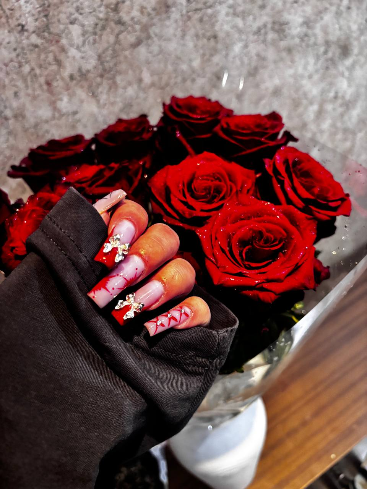
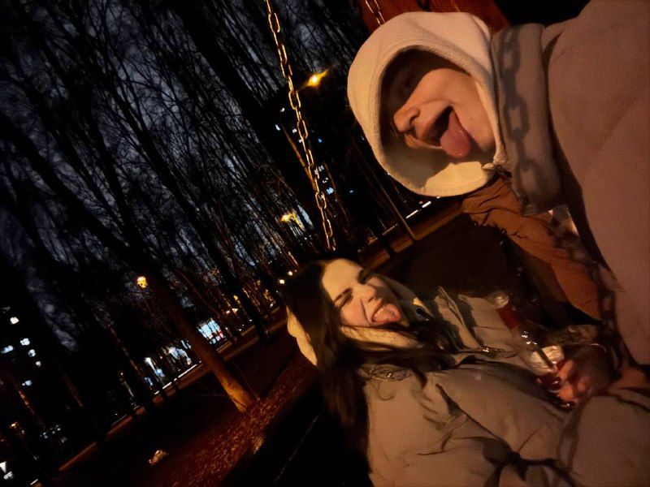
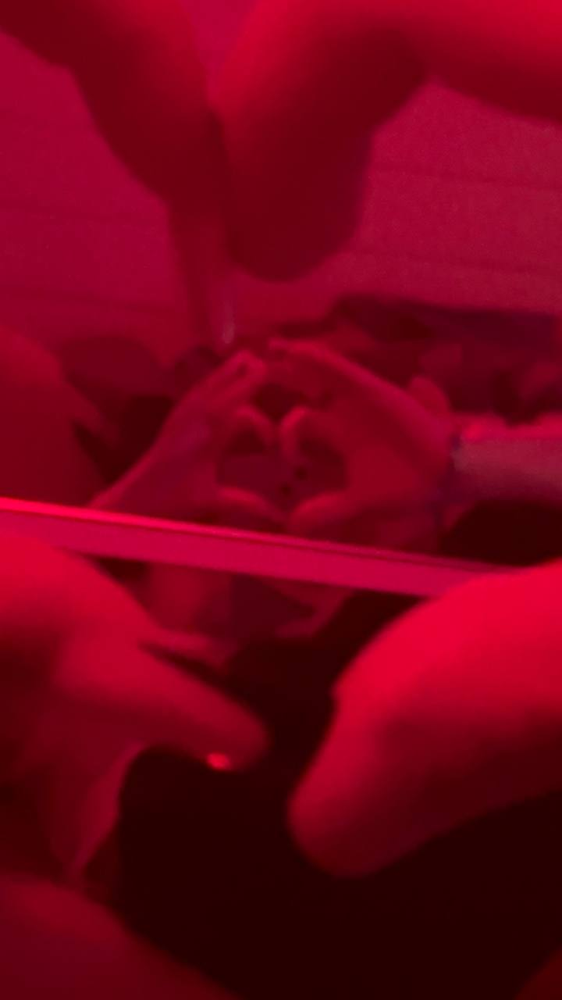
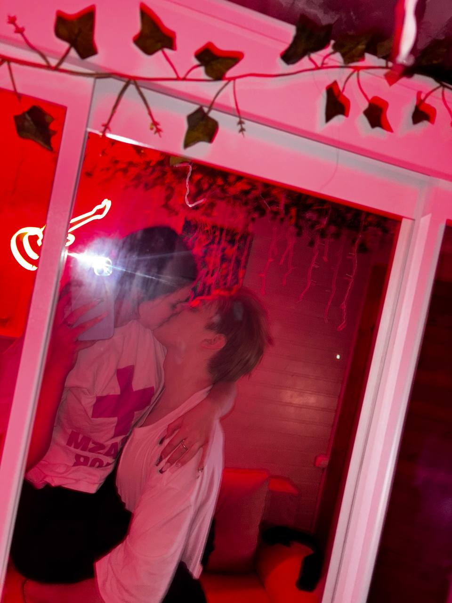
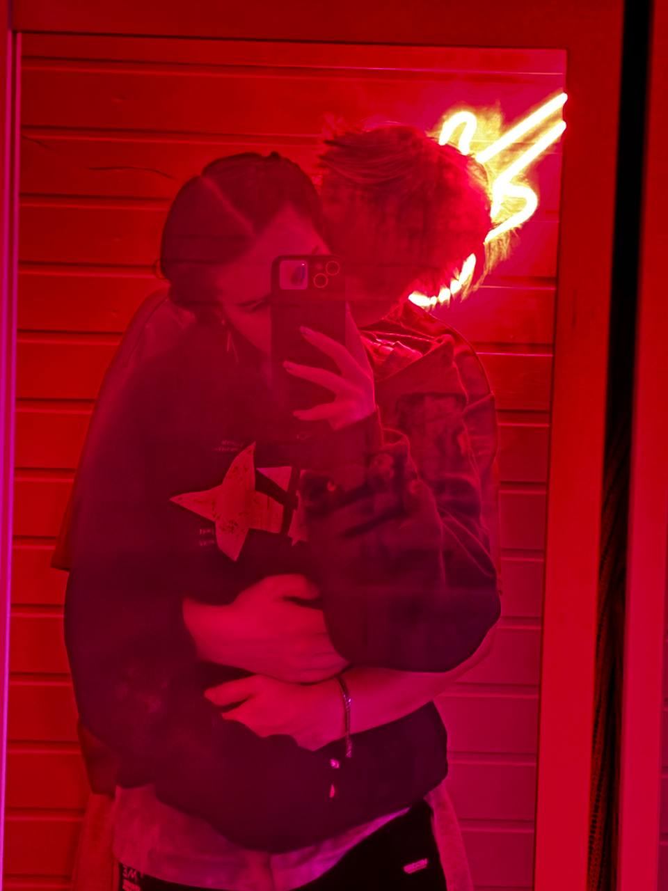

Начало
Первые, подаренные мной, цветы.
Это была наша первая встреча. Я тогда очень волновался, я реально боялся, что больше не увижу тебя. Я боялся, что та первая встреча будет последней...
Это какое-то чудо...
Ты мое чудо!❤️
❤️

💕 А эти прогулки... 💕
Ты меня удивляешь...
Когда я смотрю на тебя, всегда удивляюсь. Как ты умудряешься совмещать в себе такую божественную красоту и духовную простоту. При первой нашей встречи, именно это меня очень зацепило ❤️
❤️
👀 Твои голубые глазки 👀
Этим глазкам я хочу посвятить свою жизнь
Твои глаза, самое завораживающее, что есть в этой вселенной. В какой бы раз я в них не смотрел, всегда будто в первый. Когда случайно замечаю твой взгляд на себе, становится так легко и спокойно. Словно все тревоги пропадают.
Я не смогу, как раньше жить спокойно, без этих красивых глазок 🤩
❤️

Жить сейчас
То, чего мне не хватало
И как я жил раньше, без "Доброе утро❤️", "бебебе", "Целуй!!!", "Люблю тебя, очень-очень!!" и даже без таких, как "хихихи" и "мг"? Теперь точн оне смогу!!
❤️

💑 Спасибо 💑
Спасибо тебе
Спасибо за всю проявленную заботу. Спасибо за те душевные разговоры. Спасибо за твое терпение, за поддержку. Спасибо за-то, что именно ты заменила весь мир.
❤️

💌 Письмо тебе 💌
Я понимаю, уже и так слшком много было сказано, но тебе, солнышко мое, придется привыкнуть к тому ,что тобой хотят жить.
Хочу сказать, что всегда буду рядом. Я стараюсь поддерживвать тебя всем, что у меня есть. Никогда не смогу остаться в стороне, когда тебе грустно и плохо. Я хочу разделять с тобой все эмоции, буквально хочу разделить с тобой жизнь.
Так странно, всегда когда ты рядом, столько всего крутится в голове. Мысли путаются, язык заплетается, словно я болен. Болен тобой.
Я понял, что не стоит бояться совершать ошибок, стоит бояться стоять на месте. И пусть я не идеален, но я хочу совершать и меняться именно с тобой.
Люблю тебя очень-очень
❤️ ❤️ ❤️
Спасибо, что ты есть
❤️ ❤️ ❤️
С 14 февраля, любимая
Конец титров, но не нашей истории...
Продолжнение следует....